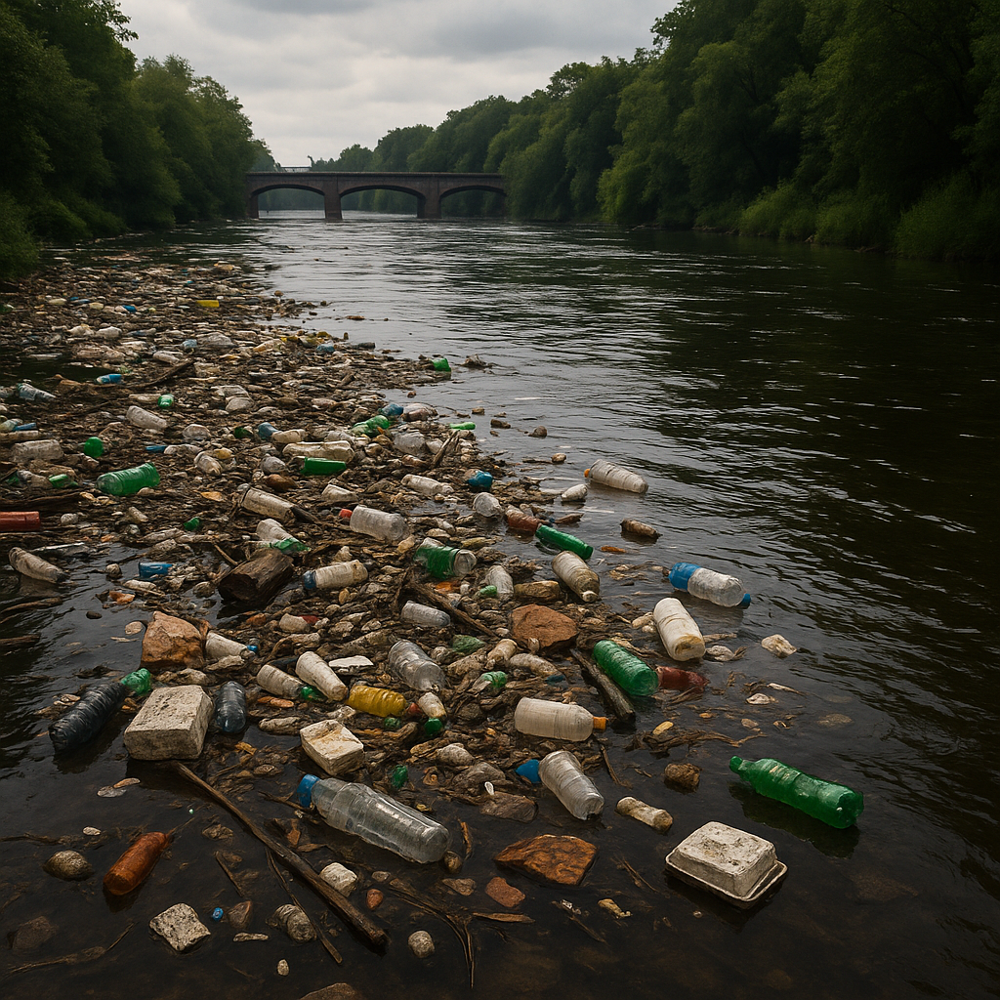
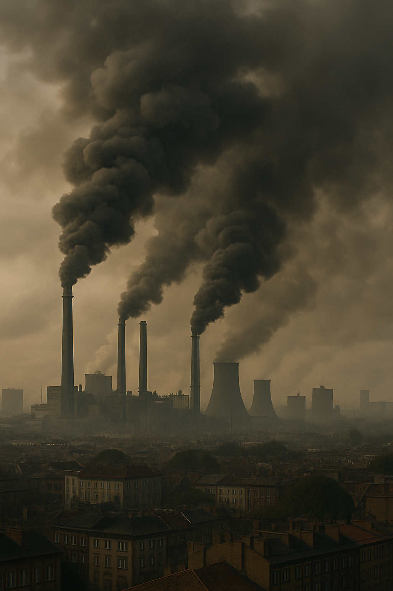
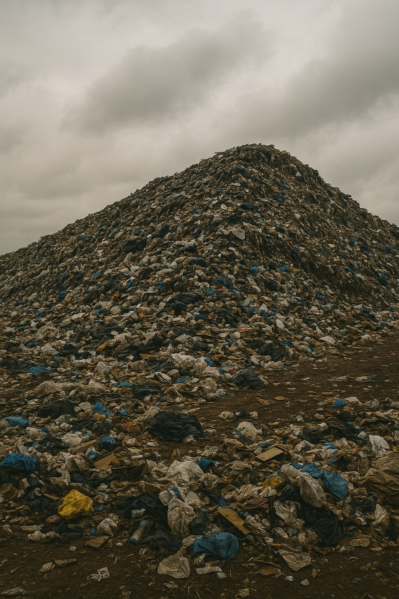
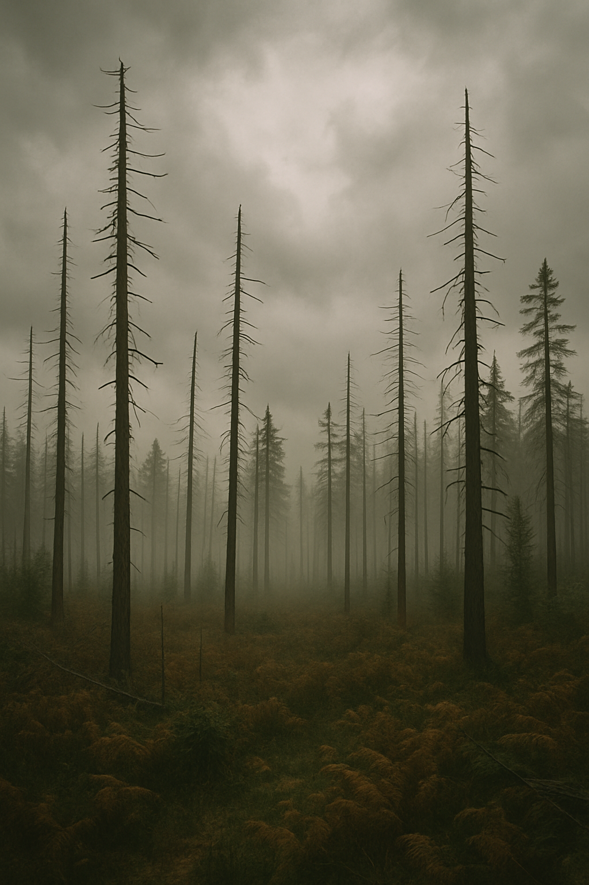
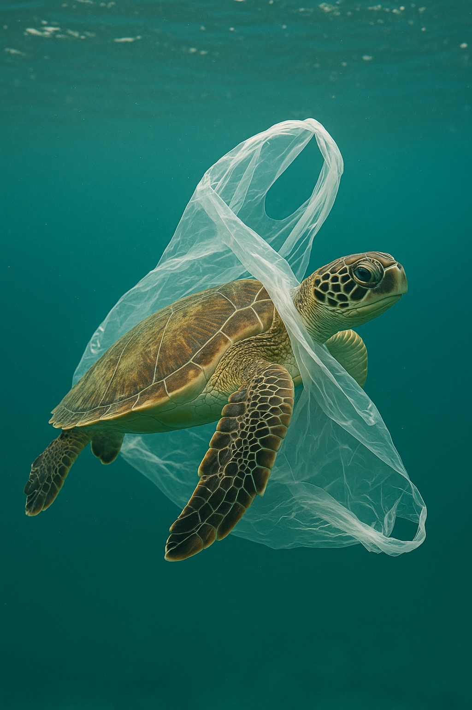

Saltar al contenido principal
Inicio
Contaminacion
Galería
Río contaminado con basura flotante

Humo denso sobre una ciudad industrial

Montaña de basura en un vertedero

Bosque afectado por la lluvia ácida

Tortuga atrapada en un plástico en el océano
